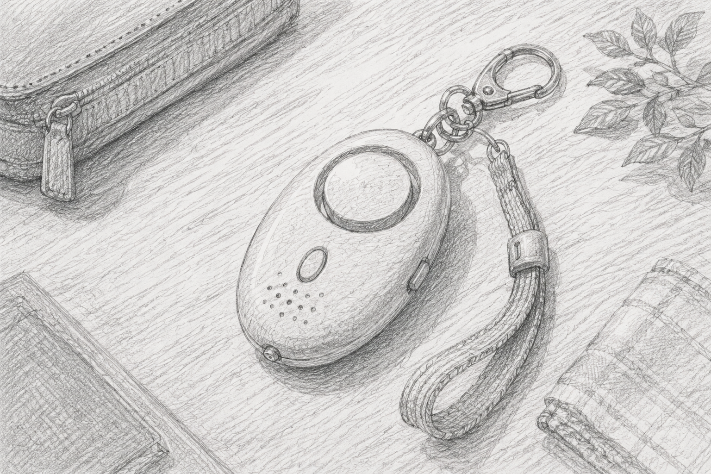
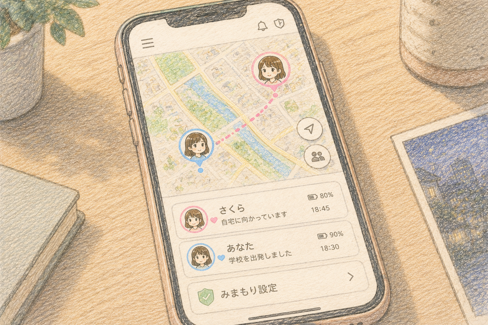
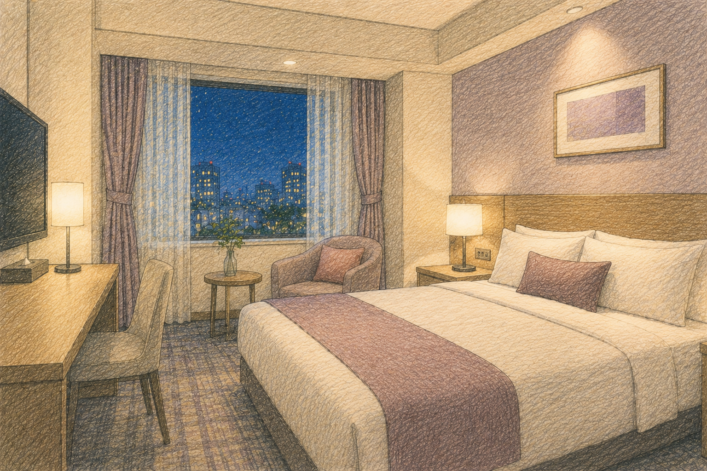
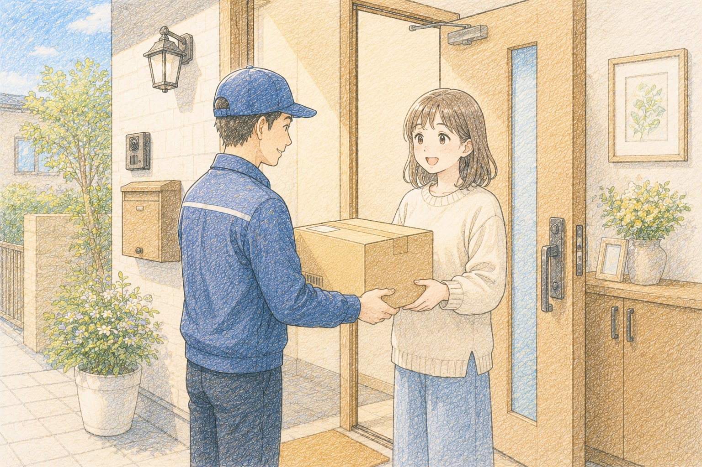
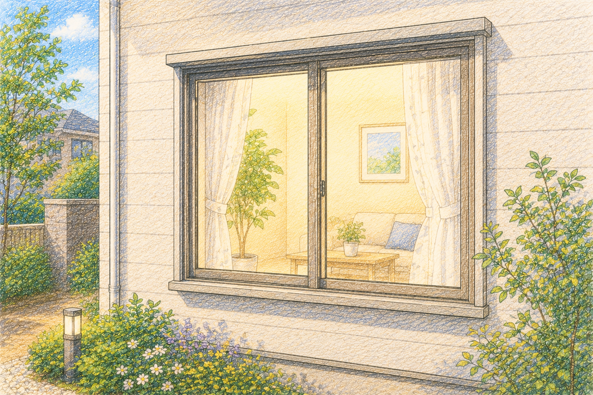
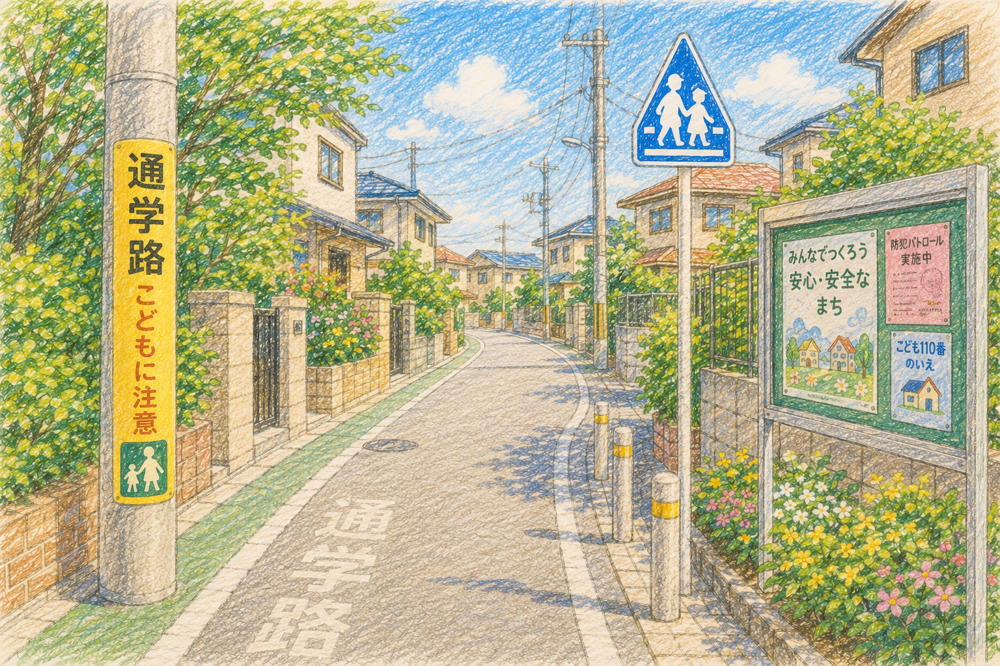
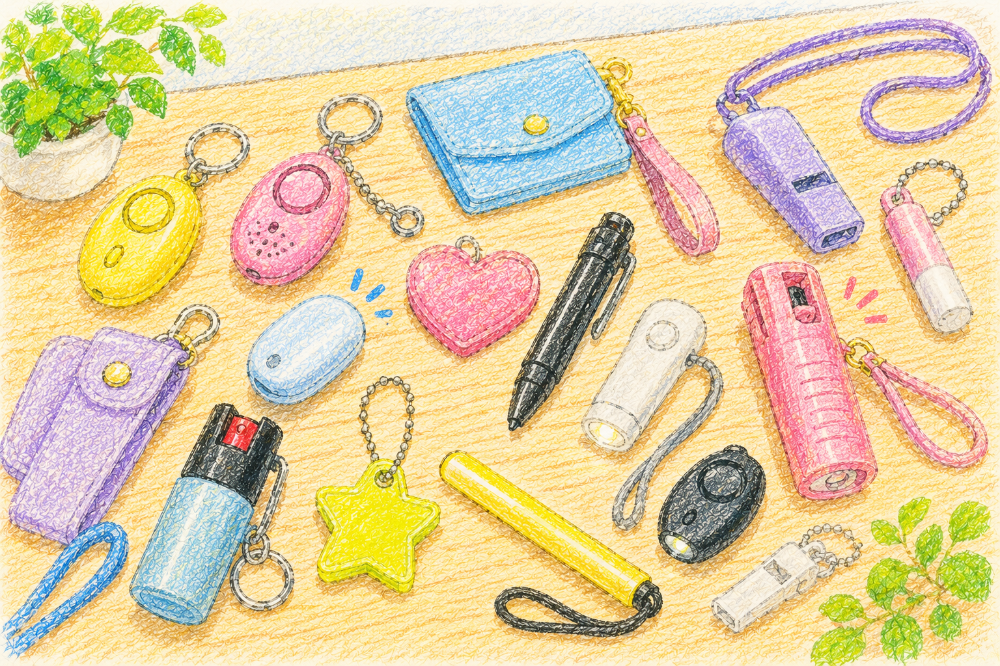
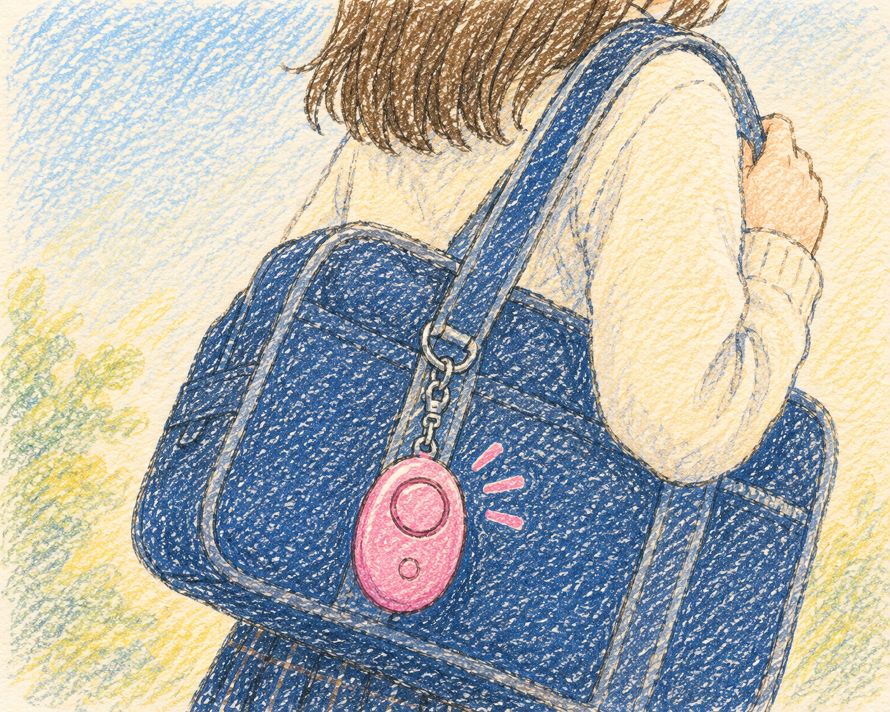

Safety journal
知っているだけで変えられる、夜道や一人暮らしの小さな備え。今日から取り入れやすい防犯のヒントをまとめています。
記事を探す
すべての記事を表示しています

一人暮らし
玄関まわりの防犯チェックリスト
鍵、郵便受け、ドアスコープなど、入居時に確認したいポイント。

防犯グッズ
防犯ブザーを選ぶときに見るポイント
音量だけでなく、鳴らし方や誤作動のしにくさも確認します。

Q&A
催涙スプレーの基本と注意点
携帯や保管、使用時に知っておきたい基本事項を整理。
夜道
イヤホンをしながら歩くときの注意点
周囲の音を遮りすぎず、異変に気づくための使い方。

見守り
位置共有を始める前に決めておくこと
共有する相手や時間帯、プライバシーのルールを考えます。

旅行・出張
ホテルに着いたら確認したい防犯ポイント
ドア、窓、非常口など、入室後にできる短い確認リスト。

一人暮らし
宅配便を受け取るときの小さな対策
置き配やインターホンを活用して対面時間を減らす工夫。

家の防犯
窓の防犯を見直す3つの視点
補助錠、センサー、外からの見え方を順番に確認します。

夜道
いつもの帰宅ルートを見直す方法
明るさ、人通り、逃げ込める場所を地図で確認する習慣。

防犯グッズ
毎日持ち歩ける防犯グッズの選び方
重さ、サイズ、取り出しやすさから無理のない備えを選びます。
家族
帰宅連絡のルールを無理なく続けるコツ
連絡が負担にならない頻度や合図を家族で決める方法。

Q&A
防犯ブザーはどこにつけるのが正解？
緊急時に片手ですぐ届く位置を、バッグ別に考えます。